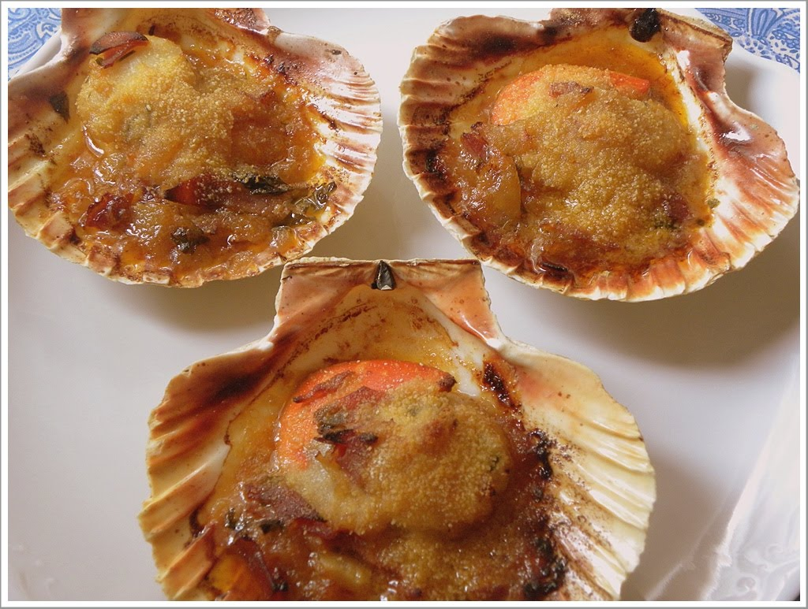

Vieiras a la gallega

Las vieiras a la gallega son un deleite culinario de la región de Galicia, en España.
Presentan una combinación exquisita de sabores marinos y aromas ahumados. En esta preparación, las vieiras
se realzan con una cama de patatas tiernas, mientras que una mezcla de ajo, pimentón y aceite de oliva se
infunde en cada bocado con su distintivo sabor.
El resultado es un plato que destaca la frescura de las vieiras, la suavidad de las patatas y la riqueza de
la mezcla de condimentos, creando una experiencia gastronómica única y reconfortante. Servido con un toque
final de perejil fresco, este plato refleja la autenticidad y el encanto de la cocina gallega.
A continuación, la receta que nos proporciona
ChatGPT.
Ingredientes para 4 personas:
- 12 vieiras en concha
- 2 patatas grandes
- 3 dientes de ajo, picados
- Perejil fresco, picado
- Pimentón de la Vera (dulce o picante) al gusto
- Aceite de oliva virgen extra
- Sal al gusto
Instrucciones:
-
Precalienta el horno a 200°C.
-
Cocina las patatas: Pela las patatas y córtalas en rodajas finas. Cocínalas en agua con sal hasta que
estén tiernas pero aún firmes.
-
Prepara las vieiras: Lava bien las vieiras y sécalas con papel absorbente. Coloca las vieiras en sus
conchas sobre una bandeja para horno.
-
Coloca las patatas sobre las vieiras: Pon una rodaja de patata sobre cada vieira en concha.
-
Sofríe el ajo y el pimentón: En una sartén, calienta un poco de aceite de oliva. Añade los ajos picados
y el pimentón, y sofríe brevemente hasta que el ajo esté dorado.
-
Distribuye la mezcla sobre las vieiras: Vierte la mezcla de ajo y pimentón sobre cada vieira,
asegurándote de cubrir las patatas también.
-
Hornea: Coloca la bandeja en el horno precalentado y hornea durante aproximadamente 10 minutos, o hasta
que las vieiras estén cocidas y las patatas estén doradas.
-
Finaliza con perejil: Justo antes de servir, espolvorea las vieiras con perejil fresco picado.
Sirve las vieiras calientes y disfruta de este plato sabroso y tradicional de Galicia. ¡Buen provecho!